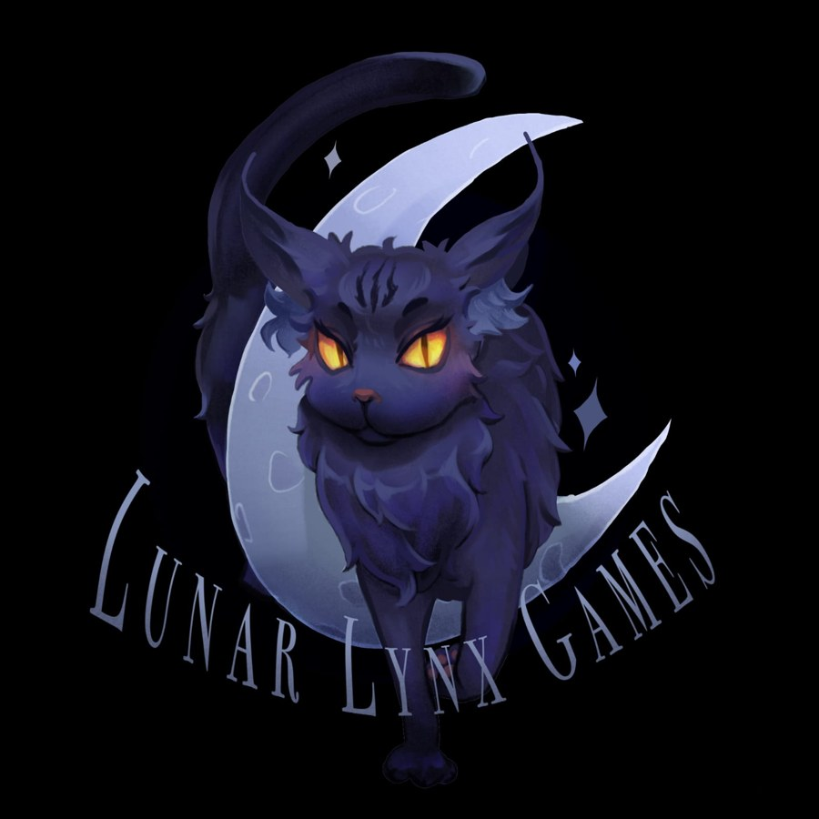

Anna Rogers
Games Development Student
I aspire to make Indie horror games as Lunar Lynx Games.
Im a massive fan of Fears To Fathom and games by Chillas Art. These are the kinda games I want to be making under the Lunar Lynx Games title. I love games with this style, pacing and ambiance.
I am still learning alot about coding and making games, you can follow my process and play my games on itch.io and watch videos on YouTube.
